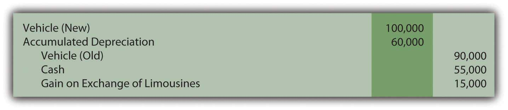
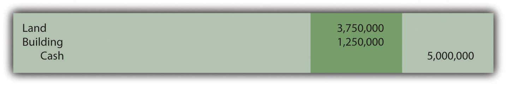
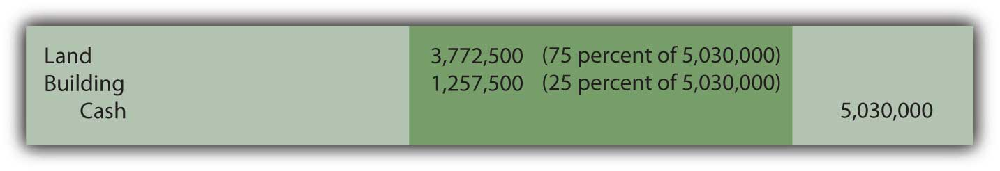
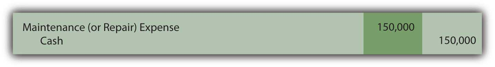
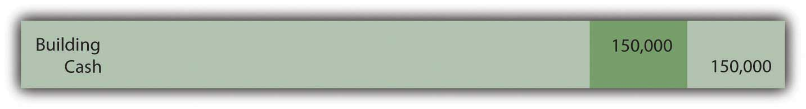
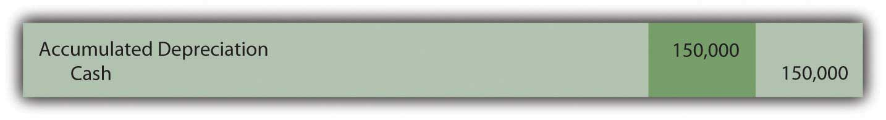

At the end of this section, students should be able to meet the following objectives:
Question: Some assets are acquired by exchange instead of through purchase ( asset exchangeA trade of one asset for another in which the book value of the old asset is removed from the records while the new asset is recorded at the fair value surrendered (if known); the difference creates a gain or loss to be reported.). For example, the limousine discussed earlier might well be traded away after two years for a newer model. Such transactions are common, especially with vehicles. How is the cost of a new asset determined if obtained through an exchange rather than an acquisition?
To illustrate, assume that this limousine is traded to an automobile manufacturer for a new model on December 31, Year Two. By that time as shown previously, the net book value had fallen to $30,000 (cost of $90,000 less accumulated depreciation of $60,000). However, because company employees have taken excellent care of the vehicle during those two years, fair value is actually $45,000. As has been discussed, book value rarely equals fair value during the life of property and equipment. Assume that the vehicle being acquired is worth $100,000 so the company also pays $55,000 in cash ($100,000 value received less $45,000 value surrendered) to the manufacturer to complete the trade. How is such an exchange recorded?
Answer: In virtually all cases, fair value is the accounting basis used to record items received in an exchange. The book value of the old asset is removed from the accounts and the new model is then reported at fair value. Fair value is added; book value is removed. A gain or loss is recognized for the resulting change in the company’s reported financial position.
In this example, the company surrenders two assets with a total fair value of $100,000 ($45,000 value for the old limousine plus $55,000 in cash) to obtain the new vehicle. However, the assets given up have a total net book value of only $85,000 ($30,000 and $55,000). A $15,000 gain is recognized on the exchange ($100,000 fair value less $85,000 book value). The gain results because the old limousine had not lost as much value as the depreciation process had expensed. The net book value was reduced to $30,000 but the vehicle was actually worth $45,000.Accounting rules are created through a slow and meticulous process to avoid unintended consequences. For example, assume that Company A and Company B buy identical antique limousines for $30,000 that then appreciate in value to $100,000 because of their scarcity. Based solely on the accounting rule described in this section, if the two companies exchange these assets, each reports a gain of $70,000 while still retaining possession of an identical vehicle. This reporting is not appropriate because nothing has changed for either party. In reality, no gain occurred since the companies retain the same financial position as before the trade. Thus, in creating its official guidance as described above, FASB held that an exchange must have commercial substance to justify using fair value. In simple terms, the asset acquired has to be different from the asset surrendered as demonstrated by the amount and timing of future cash flows. Without a difference, no rationale exists for making the exchange. If a trade does not have commercial substance, net book value is retained so that no gain is recognized.
Figure 10.12 Recording Exchange of Assets

Question: In the previous example, the value of the assets surrendered ($45,000 plus $55,000 or $100,000) equals the value of the new limousine received ($100,000). The trade was exactly even. Because one party has better negotiating skills or a serious need for a quick trade, the two values can differ, at least slightly. For example, the limousine company might give up its old vehicle (worth $45,000) and cash ($55,000) and manage to convince the automobile manufacturer to hand over a new asset worth $110,000. If the values are not equal in an exchange, which fair value is used for reporting purposes? Should the new limousine be recorded at the $100,000 value given up or the $110,000 value received?
Answer: To stay consistent with the historical cost principle, the new asset received in a trade is recorded at the fair value of the item or items surrendered. Giving up the previously owned property is the sacrifice made to obtain the new asset. That is its cost to the new buyer.
Generally, the fair value of the items sacrificed equals the fair value of the items received. Most exchanges involve properties of relatively equal worth; a value of $100,000 is surrendered to acquire a value of $100,000. However, that is not always the case. Thus, if known, the fair value given up always serves as the basis for recording the asset received. Only if the value of the property traded away cannot be readily determined is the new asset recorded at its own fair value.
Link to multiple-choice question for practice purposes: http://www.quia.com/quiz/2092907.html
Question: At times, two or more assets are acquired for a single price. The most common example is the purchase of a building along with the land on which it is constructed. As has been discussed, the portion of the cost assigned to the building is depreciated over its useful life in some systematic and rational manner. However, land does not have a finite life. Its cost remains an asset so that there is no impact on reported net income over time. How does an accountant separate the amount paid for land from the cost assigned to a building when the two are purchased together?
Assume a business pays $5.0 million for three acres of land along with a five-story building. What part of this cost is attributed to the land and what part to the building? Does management not have a bias to assign more of the $5.0 million to land and less to the building to reduce the future amounts reported as depreciation expense?
Answer: Companies do occasionally purchase more than one asset at a time. This is sometimes referred to as a basket purchaseThe acquisition of more than one asset at a single cost, which is then allocated among those assets based on relative values.. For example, a manufacturer might buy several machines in a single transaction. The cost assigned to each should be based on their relative values.
For this illustration, assume that the land and building bought for $5.0 million have been appraised at $4.5 million and $1.5 million, respectively, for a total of $6.0 million. Perhaps the owner needed cash immediately and was willing to accept a price of only $5.0 million. For the buyer, the land makes up 75 percent of the value received ($4.5 million/$6.0 million) and the building the remaining 25 percent ($1.5 million/$6.0 million). The cost is simply assigned in those same proportions: $3.75 million to the land ($5.0 million × 75 percent) and $1.25 million to the building ($5.0 million × 25 percent).
Figure 10.13 Allocation of Cost between Land and Building
In the event that the buyer also has to pay other normal and necessary costs (such as attorney fees, title searches, or the like) for cash of $30,000, the adjusted cost of $5,030,000 must still be allocated based on the relative fair value percentages.
Figure 10.14 Total Cost Allocated between Land and Building
Occasionally, in a basket purchase, the value can be determined for one of the assets but not for both. As an example, the above land might be worth $4.5 million but no legitimate value is available for the building. Similar structures might not exist in this area for comparison purposes. In such cases, the known value is used with the remainder of the cost assigned to the other property. Assume that the total cost of these properties is $5,030,000. If the land is known to be worth $4.5 million but no reasonable value can be ascribed to the building, the excess $530,000 is arbitrarily allocated to this second asset.
Figure 10.15 Allocation Based on Known Value for Land Only
Does the possibility of bias exist in these allocations? Accounting is managed by human beings and they always face a variety of biases. That potential problem is one of the primary reasons that independent auditors play such an important role in the financial reporting process. These outside experts work to ensure that financial figures are presented fairly and without bias. Obviously, if the buyer assigns more of the cost of a basket purchase to land, future depreciation will be less and reported net income will be higher. In contrast, if more of the cost is allocated to the building, depreciation expense is higher and taxable income and income tax payments are reduced. That is also a tempting choice.
Thus, the independent auditor must gather evidence to provide reasonable assurance that such allocations are based on reliable appraisal values so that both the land and the building are fairly presented. However, a decision maker is naïve not to realize that potential bias does exist in any reporting process.
Question: Assume that a cost of $1,257,500 is assigned to the building above. Assume further that it has an expected life of twenty years and straight-line depreciation is applied with no residual value. Thus, after eight years, accumulated depreciation is $503,000 ($1,257,500 × 8 years/20 years). At that point, the company spends an additional $150,000 on the building. Should an expenditure associated with property and equipment that is already in use be capitalized (added to the asset account) or expensed immediately?
Answer: The answer to this question depends on the impact that this work has on the building. In many cases, additional money is spent simply to keep the asset operating with no change in expected life or improvement in future productivity. Such costs are recorded as maintenance expense if they were anticipated or repair expense if unexpected. For example, changing the oil in a truck at regular intervals is a maintenance expense whereas fixing a dent from an accident is a repair expense. This distinction has no impact on reported income.
Figure 10.16 Recording of Cost to Maintain or Repair Asset
However, if the $150,000 cost increases the future operating capacity of the asset, the amount should be capitalized. The building might have been made bigger, more efficient, more productive, or less expensive to operate. If the asset has actually been improved by the cost incurred, historical cost is raised.
Figure 10.17 Cost Capitalized Because of Increase in Operating Capacity
Assuming that no change in either the useful life or the residual value occurs as a result of this work, depreciation expense will be $75,375 in each of the subsequent twelve years. The newly increased book value is simply allocated over the useful life that remains.
($1,257,500 +$150,000 – $503,000)/12 remaining years = $75,375Another possibility does exist. The $150,000 might extend the building’s life without creating any other improvement. Because the building will now generate revenue for a longer period of time than previously expected, this cost is capitalized. A clear benefit has been gained from the amount spent. The asset is not physically bigger or improved but its estimated life has been extended. Consequently, the building is not increased directly, but instead, accumulated depreciation is reduced. In effect, this expenditure has recaptured some of the previously expensed utility.
Figure 10.18 Cost Capitalized Because Expected Life Is Extended
Assuming the $150,000 payment extends the remaining useful life of the building from twelve to eighteen years with no accompanying change in residual value, depreciation expense will be $50,250 in each of these remaining eighteen years. Once again, the book value has increased but, in this situation, the life of the asset has also been lengthened.
reduced accumulated depreciation: $503,000 – $150,000 = $353,000 adjusted net book value: $1,257,500 – $353,000 = $904,500 annual depreciation: $904,500/18 years = $50,250Link to multiple-choice question for practice purposes: http://www.quia.com/quiz/2092959.html
Assets are occasionally obtained through exchange. Reported cost is established based on the fair value of the property surrendered because that measures the company’s sacrifice. The asset received is only recorded at its own fair value if the value of the asset given up cannot be determined. When more than one asset is acquired in a transaction, the cost allocation is based on the relative fair values of the items received. Subsequent costs incurred in connection with property and equipment are capitalized if the asset has been made bigger or better in some way. If the length of the remaining useful life is extended, capitalization is established by reducing accumulated depreciation.